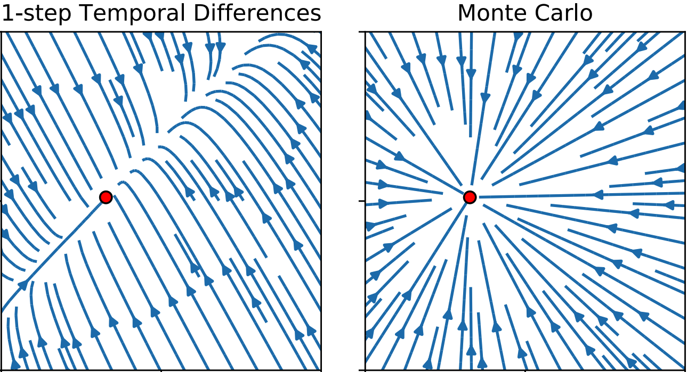
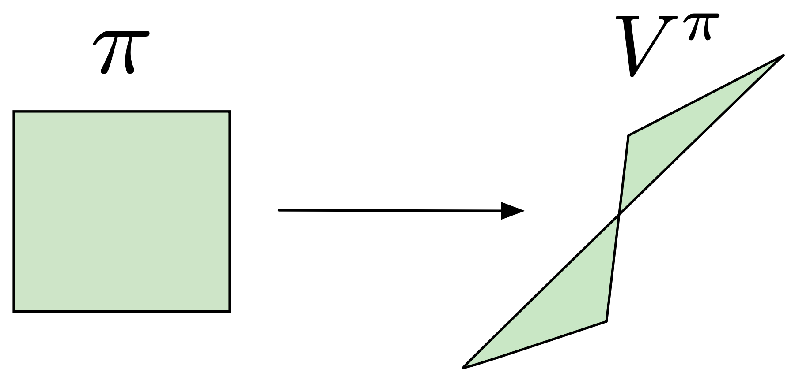

Interesting RL Papers

Agent

Human
|
Investigating Human Priors for Playing Video Games
Rachit Dubey, Pulkit Agrawal, Deepak Pathak, Thomas L. Griffiths, Alexei A. Efros ICML 2018 This game placed us in the shoes of reinforcement learning (RL) agents that start off without the immense prior knowledge that humans possess. |
|  |
On The Effect of Auxiliary Tasks on Representation Dynamics
Clare Lyle, Mark Rowland, Georg Ostrovski, Will Dabney AISTATS 2021 Even in an environment with no reward signal at all, an agent performing TD learning still picks up information about the transition structure of the environment within its value function. |

1000 FPS

50 FPS
|
Making Deep Q-learning methods robust to time discretization
Corentin Tallec, Léonard Blier, Yann Ollivier ICML 2019 Standard approaches based on estimation of state-action values, such as DQN1 and DDPG2 are not at all robust to changes in time discretization (i.e. increasing FPS from 50 to 1000). |
|  |
The Value Function Polytope in Reinforcement Learning
Robert Dadashi, Adrien Ali Taïga, Nicolas Le Roux, Dale Schuurmans, Marc G. Bellemare ICML 2019 We characterized the shape of value functions and established its surprising geometric nature: a possibly non-convex polytope. |